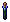
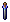

Stygian Sbyss戦利品アイテム
錬金の希少素材については別のページにまとめていますので、ここでは掲載していません。
１．クエストアイテム用
Stygian Abyss拡張により追加されたクエストを完了させるために必要なアイテムです。
- acid sac [酸のう] --- acid slugの戦利品として入手。ある場所のツタを焼ききるのに使用。
- boura skin[Bouraの皮] --- boura (lowland, ruddy, high plains) の戦利品として入手。
- congealed slug acid [凝固した酸] --- acid slugの戦利品として入手。
- seared fire ant goo [焼け焦げたFire Antの粘液] --- fire antの戦利品として入手。
- undamaged iron beetle scale [無傷のIron Beetleの鱗]--- iron beetleの戦利品として入手。
- fairy dragon wing [Fairy Dragonの翼] --- fairy dragonの戦利品として入手。
- leather wolf skin[Leather wolfの皮] --- leather wolfの戦利品として入手。
- undead gargoyle medallions[Undead Gargoyleのメダリオン] --- undead gargoyleの戦利品として入手。
- undamaged undead gargoyle horns[無傷のundead gargoyleの角] --- undead gargoyleの戦利品として入手。
- infused glass stave[吹き込まれたガラスの杖] --- putrid undead gargoyleの戦利品として入手。
- treefellow wood[ツリーフェローの木] --- treefellow guardianの戦利品として入手。
- ancient pottery fragments [古代の陶芸品の欠片] --- Stygian Abyss拡張エリアのモンスターから入手可能。
- tattered remnants ancient scroll [古いスクロールの破片] --- Stygian Abyss拡張エリアのモンスターから入手可能。
- untranslated ancient tome [未解読の古文書] --- Stygian Abyss拡張エリアのモンスターから入手可能。
２．アイテム作成用・秘薬
生産スキルでアイテムを作成するために必要なアイテムおよび新しく追加された秘薬です。
 toxic venom sac[毒液袋] --- toxic slithの戦利品として入手。毒洗浄液（錬金）の材料。
toxic venom sac[毒液袋] --- toxic slithの戦利品として入手。毒洗浄液（錬金）の材料。- silver serpent venom[シルバーサーペントの毒] --- venom vial[毒用容器]を生きたsilver serpentへ使うことで入手。戦利品としても入手可能。色素定着材（錬金）の材料。
- void essence [虚無のエッセンス] --- TerMurに棲むVoidモンスターの戦利品として入手。ソウルストーンフラグメント（硝工）およびからくりペット（細工）の材料。
 medusa blood --- medusaの戦利品として入手。復活のエリクサー（錬金）の材料。
medusa blood --- medusaの戦利品として入手。復活のエリクサー（錬金）の材料。 dragon's blood --- boura, raptor, slith, fairy dragonなどを倒し、皮を剥ぎ取ることで入手可能となる。神秘魔法の秘薬。
dragon's blood --- boura, raptor, slith, fairy dragonなどを倒し、皮を剥ぎ取ることで入手可能となる。神秘魔法の秘薬。 daemon bone --- TerMurに棲むVoidモンスターの戦利品として入手。神秘魔法の秘薬。
daemon bone --- TerMurに棲むVoidモンスターの戦利品として入手。神秘魔法の秘薬。
３．その他
現在、明確な使用目的がないアイテムです。
- fay wings [妖精の翼] --- fairy dragonの戦利品として入手。
- lodestone [磁鉄鉱] --- Abyss均衡エリアのRatmanモンスターから戦利品として入手。
- void core [虚無の核] --- TerMurに棲む上級Voidモンスターの戦利品として入手。
- vile tentacles [おぞましい触手] --- maddening horrorの戦利品として入手。
- fur[毛皮] --- boura, kepetchから皮を剥ぎ取ったときに入手可能。
左から、lowland, ruddy, high plains の毛皮
左から、kepetch, kepetch ambusher の毛皮